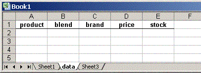
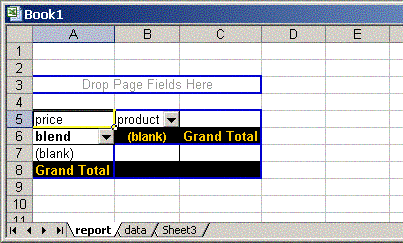

nl.fountain.xelem.expat.XLDocument
nl.fountain.xelem.expat.XLDocument
|
xelem.3.1 | |||||||||
| PREV CLASS NEXT CLASS | FRAMES NO FRAMES | |||||||||
| SUMMARY: NESTED | FIELD | CONSTR | METHOD | DETAIL: FIELD | CONSTR | METHOD | |||||||||
java.lang.Object
public class XLDocument
A class that will take an existing xml-spreadsheet as a template.
Sometimes you just want to dump a lot of data produced within your java-
application into a preformatted template. Building an
XLWorkbook from scratch may be
time consuming and seems a waste of effort.
Whereas the strategy of xelem can be described as arranging a conglomerate of Java-classinstances that transform themselves into an xml-document, this class uses a different approach. It parses an existing template-file and tinkers with xml-elements in the derived document, acting as a facade around these surgical opperations.
Create your template in Excel. Select columns to set formatting (i.e. style-id's)
on entire columns. If you wish, you may put table headings, formula's, titles
and what have you, in the first rows of the sheets. Save your template as an
XML Spreadsheet and
instantiate an instance of XLDocument with the parameter
fileName set to the path where your template resides. The methods
appendRow(String sheetName, Row row) and
appendRows(String sheetName, Collection rows)
will append the rows as row-elements
directly under the last row-element of the sheet. As long as the appended rows
and cells do not have a StyleID set, your data
will be formatted according to the style-id's which were set on your columns
during the creation of the template. And offcourse,
you could set StyleID's on rows and cells, but take care to only use id's that have
a definition in the section <Styles> in your template.
The method setCellData(Cell, String, int, int) will set or replace
(only) the data-element of the mentioned cell and is typically used
to add header information to a bunch of data appended with
appendRow/appendRows.

We could set a currency format on column D.

<ConsolidationReference>
<FileName>[template.xml]data</FileName>
<Reference>R1C1:R2C5</Reference>
</ConsolidationReference>
We'll need to change the text in both FileName- and Reference-elements
in the file that is going to be output. We'll do that in the Java-part.
public void testPivot() {
Object[][] data = {
{"blue", "A", "Star", new Double(2.95), new Double(55.6)},
{"red", "A", "Planet", new Double(3.10), new Double(123.5)},
{"green", "C", "Star", new Double(3.21), new Double(20.356)},
{"green", "B", "Star", new Double(4.23), new Double(456)},
{"red", "B", "Planet", new Double(4.21), new Double(789)},
{"blue", "D", "Planet", new Double(4.51), new Double(9.6)},
{"yellow", "A", "Commet", new Double(4.15), new Double(19.8)}
};
// set up a collection of rows and populate them with data.
// your data will probably be collected in a more sophisticated way.
Collection rows = new ArrayList();
for (int r = 0; r < data.length; r++) {
Row row = new SSRow();
for (int c = 0; c < data[r].length; c++) {
row.addCell(data[r][c]);
}
rows.add(row);
}
OutputStream out;
try {
// create the XLDocument
XLDocument xlDoc = new XLDocument("template.xml");
// append the rows to the sheet 'data'
xlDoc.appendRows("data", rows);
// this will be the new filename
String fileName = "prices.xls";
// we'll change the FileName-element to reflect our new filename
xlDoc.setPTSourceFileName(fileName, "data");
// we'll change the Reference-element to reflect
// the size of the new source table
xlDoc.setPTSourceReference(1, 1, rows.size() + 1, 5);
// output the new file
out = new BufferedOutputStream(new FileOutputStream(fileName));
new XSerializer().serialize(xlDoc.getDocument(), out);
out.close();
} catch (XelemException e) {
e.printStackTrace();
} catch (IOException e) {
e.printStackTrace();
}
}
| Constructor Summary | |
|---|---|
XLDocument(String fileName)
Creates a new XLDocument by parsing the specified file into a Document. |
|
| Method Summary | |
|---|---|
void |
appendRow(String sheetName,
Row row)
Appends the Row to the mentioned sheet. |
void |
appendRows(String sheetName,
Collection<Row> rows)
Appends all the rows in the Collection
to the mentioned sheet. |
protected Element |
getCellElement(String sheetName,
int rowIndex,
int columnIndex)
Gets the Cell element at the given worksheet at the given index. |
Document |
getDocument()
Gets the underlying Document-implementation. |
protected Element |
getRowElement(String sheetName,
int index)
Gets the Row element at the given worksheet with the given index. |
protected Element |
getSheetElement(String sheetName)
Gets the Worksheet element with the given name. |
protected Element |
getTableElement(String sheetName)
Gets the Table element that is the child of the Worksheet element with the given name. |
void |
setCellData(Cell cell,
String sheetName,
int rowIndex,
int columnIndex)
Will set or replace (only) the data-element of the cell-element at the intersection of the mentioned row- and columnIndex. |
int |
setPTSourceFileName(String fileName)
Replaces the old text in FileName elements with a new one. |
int |
setPTSourceFileName(String fileName,
String sheetName)
Replaces the old text in FileName elements with a new one. |
int |
setPTSourceReference(Address address1,
Address address2)
Replaces the old text in Reference elements with a new string of R1C1 reference style. |
int |
setPTSourceReference(int r1,
int c1,
int r2,
int c2)
Replaces the old text in Reference elements with a new string of R1C1 reference style. |
int |
setPTSourceReference(String reference)
Replaces the old text in Reference elements with a new one. |
| Methods inherited from class java.lang.Object |
|---|
clone, equals, finalize, getClass, hashCode, notify, notifyAll, toString, wait, wait, wait |
| Constructor Detail |
|---|
public XLDocument(String fileName)
throws XelemException
Document.
fileName - the filename of the xml-spreadsheet template
XelemException - if loading or parsing of the document fails.
| Method Detail |
|---|
public Document getDocument()
Document-implementation.
Use one of the serialize-methods of XSerializer
to serialize this document to a file, outputstream or writer.
public void appendRow(String sheetName,
Row row)
Row to the mentioned sheet.
The row will be appended right under the last row-elemnt.
sheetName - the name of the sheet to which the row must be appendedrow - the row to append
NoSuchElementException - if the mentioned sheet
was not found in the template.
public void appendRows(String sheetName,
Collection<Row> rows)
rows in the Collection
to the mentioned sheet. The rows will be appended in the order of the
collection right under the last row-element.
sheetName - the name of the sheet to which the rows must be appendedrows - a Collection of rows
NoSuchElementException - if the mentioned sheet
was not found in the template.
public void setCellData(Cell cell,
String sheetName,
int rowIndex,
int columnIndex)
Worksheet.addCell(int) took 31 milliseconds,
while this method took as long as 1219 ms to do the same.
As long as you do not use it for bulk-opperations no significant
time-lack will be manifest. Typically this method is used
to add header information to a bunch of data which you added with
appendRow/appendRows.
cell - the Cell holding the datasheetName - the name of the template-sheetrowIndex - the vertical cell-indexcolumnIndex - the horizontal cell-index
NoSuchElementException - if the mentioned sheet
was not found in the template.public int setPTSourceFileName(String fileName)
<ConsolidationReference>
<FileName>template.xls</FileName>
<Name>products</Name>
</ConsolidationReference>
The ConsolidationReference element has two children: FileName and Name.
You defined a name to point to the data source range of your pivot table.
The FileName element contains the name of the template-file and needs
to be replaced because the new workbook will have a different name.
fileName - the new text for the element FileName
public int setPTSourceFileName(String fileName,
String sheetName)
<ConsolidationReference>
<FileName>[template.xls]Sheet2</FileName>
<Reference>R1C1:R2C5</Reference>
</ConsolidationReference>
The ConsolidationReference element has two children: FileName and Reference.
The FileName element contains the name of the template-file
in square brackets, followed by the name of the worksheet.
The text in the FileName element needs
to be replaced because the new workbook will have a different name.
fileName - the new workbook namesheetName - the name of the sheet containing the data source range
public int setPTSourceReference(String reference)
<ConsolidationReference>
<FileName>[prices.xls]Sheet1</FileName>
<Reference>R1C1:R2C5</Reference>
</ConsolidationReference>
reference - a String of R1C1 reference style
public int setPTSourceReference(Address address1,
Address address2)
<ConsolidationReference>
<FileName>[prices.xls]Sheet1</FileName>
<Reference>R1C1:R2C5</Reference>
</ConsolidationReference>
address1 - the top-left address of the data source rangeaddress2 - the bottom-right address of the data source range
public int setPTSourceReference(int r1,
int c1,
int r2,
int c2)
<ConsolidationReference>
<FileName>[prices.xls]Sheet1</FileName>
<Reference>R1C1:R2C5</Reference>
</ConsolidationReference>
r1 - the top row of the data source rangec1 - the left-most column of the data source ranger2 - the bottom row of the data source rangec2 - the right-most column of the data source range
protected Element getSheetElement(String sheetName)
sheetName - the name of the worksheet
NoSuchElementException - if a Worksheet element with such
a name does not existprotected Element getTableElement(String sheetName)
sheetName - the name of the worksheet
NoSuchElementException - if a Worksheet element with such
a name does not exist
protected Element getCellElement(String sheetName,
int rowIndex,
int columnIndex)
sheetName - the name of the worksheetrowIndex - the vertical cell-indexcolumnIndex - the horizontal cell-index
NoSuchElementException - if a Worksheet element with such
a name does not exist
protected Element getRowElement(String sheetName,
int index)
sheetName - the name of the worksheetindex - the index of the row
NoSuchElementException - if a Worksheet element with such
a name does not exist
|
xelem.3.1 | |||||||||
| PREV CLASS NEXT CLASS | FRAMES NO FRAMES | |||||||||
| SUMMARY: NESTED | FIELD | CONSTR | METHOD | DETAIL: FIELD | CONSTR | METHOD | |||||||||